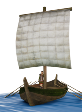
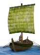

Imperium
Imperium Dacian
← all cultures · all factions · wiki index
Internal token dacian, localised from DACIAN. 5 factions · 9 of 1,305 provinces at the campaign start · 18 building levels · 2 units
Where these answers come from
Who is in a culture is descr_sm_factions.txt, the only file that assigns one. What a culture lets you build and raise is read off export_descr_buildings.txt: the word culture appears in no requires expression in that file, but the engine's faction list takes a culture token as readily as a faction token, and the 22 culture tokens are exactly the tokens in those lists that are not factions and are not all. Negated clauses count — blocking something is an effect. What its settlements look like comes from descr_cultures.txt and descr_sm_settlements.txt, which disagree about how far up the ladder some cultures go; both are stated. Where nothing in the mod conditions on a culture, the section says so with the number of clauses that were examined.
The factions in it
5 of the 239 factions in descr_sm_factions.txt are Dacian. Between them they hold 9 of the 1,305 settlements the campaign file places — 0.7% of the map at turn 0.
What its factions believe
descr_sm_factions.txt gives every faction a default religion. All 5 Dacian factions carry the same one. Culture and belief are separate axes in RIS: a culture does not fix a belief.
| Belief | Factions | Who | Belief | Factions | Who | Belief | Factions | Who |
|---|---|---|---|---|---|---|---|---|
| Thracian | 5 | Costoboci, Buri, Getae, Crobyzi, Tyragetae |
What its settlements look like
descr_sm_settlements.txt declares no block for this culture at all. That file is where a culture gets its strategy-map buildings, its walls and its settlement card, and only 8 of the 22 cultures have one — roman, barbarian, carthaginian, greek, egyptian, eastern, scythian, illyrian. What this culture's settlements are drawn with instead is not determined from the mod files.
descr_cultures.txt declares a settlement card of its own for 6 sizes, from the barbarian UI art family, and none of those files is in the mod folder — they resolve into the base game's packed data, which these pages do not read.
Its fort and watchtower are drawn from the same barbarian art, with the watchtower_barb.CAS watchtower model.
How far its settlements can grow
descr_cultures.txt gives this culture the ladder Village < Town < Large town < City < Large city < Huge city, topping out at Huge city. Every one of the 22 cultures declares the same six rungs with the same population figures, so this is not something that tells one culture from another. The numbers are on the settlement size pages.
Its unrest factors are squalor rate 2300, overcrowding rate 500, capital distance multiplier 0.2, which is what all 22 cultures declare.
What it lets you raise
2 unit types name this culture in a recruitment gate, out of the 743 distinct units the mod's 29,894 recruit lines name. These are the ones open to a Dacian faction *because* it is Dacian — a faction's own roster and the regional units it can raise where it holds the right province are on its own page.
| Unit | Raised at | Unit | Raised at | Unit | Raised at | |||
|---|---|---|---|---|---|---|---|---|
 | Boats | Trade Port, Shipwright, Dockyard |  | Large Boats | Trade Port, Shipwright, Dockyard |
What it lets you build
Government levels — 0
No government level names this culture. All 4 levels of the 4 government chains were checked.
Other building levels — 18
The 18 levels
What it blocks — 3
3 building levels are written so that being Dacian rules them out: Aqueduct (Sanitation), Healing Sanctuary (Healing), Public Baths (Sanitation).
Numbers keyed on it
8 numeric effects are granted specifically because a settlement's owner is Dacian.
| Effect | Where | Effect | Where | Effect | Where |
|---|---|---|---|---|---|
| Thracian belief +8 | Awesome Temple | Thracian belief +6 | Large Temple | religious construction cost +5% | Lumber Camp (Rural) |
| Thracian belief +10 | Pantheion | religious construction cost +10% | Sawmill (Rural) | Thracian belief +2 | Shrine |
| Thracian belief +4 | Temple | religious construction cost +10% | Timber Exports (Rural) |
Its own character in the files
| Portrait set | barbarian | Counted as civilised | no — the engine's InBarbarianLands and InUncivilisedLands script tests are true in its lands, and its soldiers jump less when charging (descr_cultures.txt's own comment) | AI assist threshold | 0 |
| Fort cost | 3,000 | Watchtower cost | 1,000 | Agents | spy 800, assassin 1,000, diplomat 750, merchant 750, admiral 200 |
6 of the 22 cultures share this civilised setting and 6 share this portrait set.